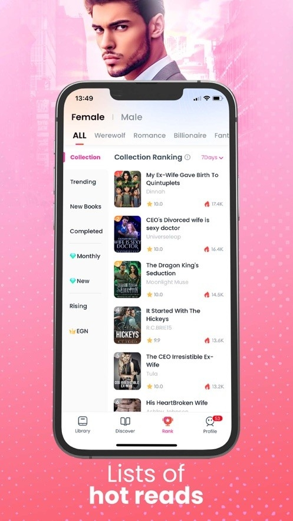

GoodNovel 横评：海外网文 App 同质化严重，它凭什么在作者和读者两端都跑得通
GoodNovel 是面向海外市场的网文阅读与创作一体化平台。本文从读者和作者双视角出发，对比同类工具的差异化优势，分析其定价策略与创作者激励机制，帮你判断 GoodNovel 值不值得装。
海外网文阅读这个赛道，过去五年其实没有真正的格局变化。Wuxiaworld 还是玄幻老大哥，Webnovel 靠背靠阅文拿中文 IP 出海，goodnovel官网在 2022 年之后突然追了上来——App Store 北美区图书榜长期 Top 3，Google Play 同类应用的增长速度甚至超过了 Webnovel。
我自己同时在 GoodNovel 和另外两个平台写英文网文，也以读者身份消费了大概两年。下面说说我的观察。
定位：它和另外几家真的不一样
先说同类格局。海外网文 App 基本分两派：一派是 Wuxiaworld 这种"读者驱动"——主打免费或极低价的翻译内容，作者分成模型很薄；另一派是 Webnovel 这种"IP 驱动"——背靠大厂，把中文网文翻译过来在海外卖，作者主体还是国内译者和签约中文作者。
GoodNovel 走的是中间路线：它不依赖中文 IP，主打 原生英文创作——平台上的作者大部分是母语为英语的海外写手，题材上狼人、霸总、奇幻、后宫这些在 Wattpad 上验证过的品类直接平移过来。这带来一个关键差异：内容迭代速度快，而且对英文读者的口味把握比翻译件精准得多。

差异化优势：三个别家没有的东西
我觉得 GoodNovel 真正跑得通，靠的是三个同行业做得不够好的点。
创作者激励的"双保险"
其他平台给创作者的收益基本靠版税分成——读者买一章作者抽成。问题是新人作者前几个月几乎拿不到版税，因为新书没有读者基数，付费解锁的章节很少。
GoodNovel 不一样。它在版税之外搞了一个 月度活跃奖金，目前三档分别是 $50、$100、$150。这个奖金和版税完全独立，发放依据是更新频率、单月总字数、读者互动数据——只要保持更新节奏，新人作者上架第一个月就能稳定拿到 $50-150 的保底收入。
更关键的是，它还配了 专属编辑对接。签约成功后平台会根据你写的题材匹配对应品类编辑——写狼人的归狼人编辑、写霸总的归霸总编辑。编辑会帮你打磨开篇前 3 章的 Hook、每章结尾的悬念设计，还会把读者评论里的高频反馈整理成结构化报告发给你，而不是让你自己翻几千条评论。
这两点加起来，对新人创作者来说吸引力很大。毕竟其他平台要么没有现金保底，要么编辑只在签约时露一次脸就消失了。
金币定价的"反直觉"设计
GoodNovel 的内购价格也挺有意思。它有五档充值，从 $0.99 到 $22.99，单金币成本不是"买越多越便宜"，反而是 $0.99 和 $1.99 这两个最低档位的单币成本最低。$5.99 和 $11.99 的中档位反而更贵。
这和大多数 App 的定价策略不一样——通常都是充大档位折扣多。但 GoodNovel 的逻辑很清晰：低价档让新用户快速体验付费流程，中档位故意不做折扣，重度用户如果真想充大的，等限时促销活动（节日或平台周年）的时候才有额外赠送金币。
对读者来说，这个定价其实挺友好——轻度用户充 $0.99 解锁几章应急，重度用户等促销充大档，中间档位基本是给那些懒得算的人准备的。
离线阅读的细节
从goodnovel下载获取安装包后，GoodNovel 会把你下载过的章节存在本地，离线打开速度比很多同类 App 快。它的问题主要在网络层面——服务器在北美，国内用户用蜂窝数据访问时偶尔会转圈，但一旦章节下到本地，阅读体验还是顺畅的。
它没有独立的清缓存入口，iOS 用户要清缓存得走"卸载 App（保留数据）→ 重装"这套操作，Android 也得去系统设置里手动清除。这个设计有点反人性，但考虑到缓存不会删除书架、解锁章节、金币余额这些云端数据，影响其实不大。

它的取舍：优势背后的代价
说了这么多好话，也要聊聊 GoodNovel 的问题。它为这些优势付出了几个明显的代价。
服务器延迟是硬伤。对于海外用户来说无所谓，但国内用户如果没有稳定的科学上网环境，打开首页经常要等 10 秒以上的 Feed 加载转圈，金币钱包偶尔会白屏，甚至离线章节打开都会卡顿。goodnovel文档里列了五步排查流程——杀进程、切网络、更版本、清缓存、卸载重装——这套流程本身就是平台稳定性不够好的旁证。
创作者编辑回复慢。虽然有专属编辑是好事，但 GoodNovel 的编辑回复速度通常在 24-48 小时，周末可能更慢。如果你的书正在冲推荐期、需要快速调整更新节奏，这个速度就有点尴尬了。编辑还不代笔、不直接改稿，沟通方式也是 Creator Dashboard 里的内部消息系统，不能加社交联系方式。
版税结算周期偏长。月度活跃奖金和版税一起结算，但版税部分的账期是月结，而且有最低提现门槛。对现金流敏感的作者来说，虽然每月的奖金能保底，但真正的版税收入要等更久。
选购结论：什么样的人选它
最后说结论。
如果你是 想写英文网文的作者，尤其是新人，GoodNovel 值得尝试。它的月度活跃奖金相当于给新人发了一个"入门保底"，专属编辑的开篇打磨和读者反馈整理也能帮你少踩很多坑。但如果你追求快速沟通和高额保底，其他平台可能更适合。
如果你是 想读英文化工、霸总、狼人文的读者，GoodNovel 的内容库比同类平台更贴合英文读者的口味，因为它的作者主体是原生英文创作者。但如果你在国内、网络环境不稳定，要做好时不时转圈的心理准备。
而如果你只看免费内容、不想折腾金币充值系统，或者对网络延迟零容忍——那 GoodNovel 可能不是你的菜。
总的来说，GoodNovel 是一个在作者和读者两端都做了差异化设计的平台。它没有追求覆盖所有用户，而是在特定品类（狼人、霸总、奇幻）和特定用户群（新人英文作者、对内容口味敏感的英文读者）上做了深。这也是它在同质化严重的海外网文赛道里能跑出来的原因。这款软件的完整资料也同步备份在GitHub、Gitee和GitCode三个仓库，方便不同网络环境下的朋友查阅。